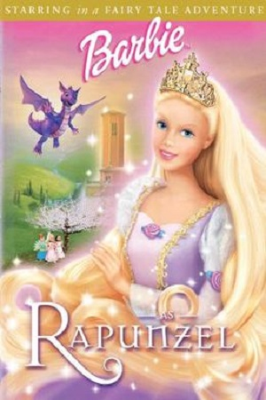
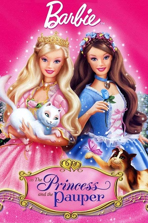

Walter Bros Animation Industry
The Series Of Barbie
Barbie in the Nutcracker
Barbie in the Nutcracker is a 2001 American-Canadian direct-to-DVD computer-animated film directed by Owen Hurley. It was the first Barbie film since the 1987 series, Barbie and the Rockers: Out of This World. It is also the first in the CGI second-generation Barbie film series, all of which feature the voice of Kelly Sheridan as the Barbie protagonist. The film is loosely adapted from E. T. A. Hoffmann's The Nutcracker and the Mouse King and music based from Tchaikovsky's ballet The Nutcracker. The film sold more than 3.4 million units on DVD by 2002, and grossed $150 million in total sales.
Price:100$

Barbie as Rapunzel
Barbie as Rapunzel is a 2002 American-Canadian direct-to-DVD computer-animated fairytale film directed by Owen Hurley.[2] It is the 2nd entry in the Barbie film series, and features the voice of Kelly Sheridan as Barbie. The film is adapted from the Brothers Grimm fairy tale "Rapunzel". Rapunzel, a princess kidnapped by an evil witch and locked in a tower, finds her life turned upside down when she comes across a magical paintbrush that brings her paintings to life.
Price:200$

Barbie as the Princess and the Pauper
Barbie as the Princess and the Pauperis a 2004 American-Canadian direct-to-DVD computer animated musical fantasy film, and the first musical in the Barbie film series. It is directed by William Lau and stars the voice of Kelly Sheridan as the Barbie protagonists, Anneliese and Erika. The film is loosely inspired by the Mark Twain's 1881 novel The Prince and the Pauper, but unrelated to the 1939 film The Princess and the Pauper. It is the first Barbie classic film that completely excludes fantastic elements (fairies, magic, mermaids, etc), which were a usual part of Barbie franchise.
Price:300$
Barbie of Swan Lake
Barbie of Swan Lake is a 2003 American - Canadian direct-to-DVD computer-animated directed by Owen Hurley. It is the 3rd CGI entry in the Barbie film series, and the second film based on a Tchaikovsky ballet (the first was Barbie in the Nutcracker). Barbie and Odette are voiced by Kelly Sheridan. The story is an adaptation of Swan Lake.The evil wizard Rothbart turns Odette into a swan and takes the ball for himself. The fairy queen saves her but says that she will retain her human form by night and turn into a swan during the day.
Price:400$